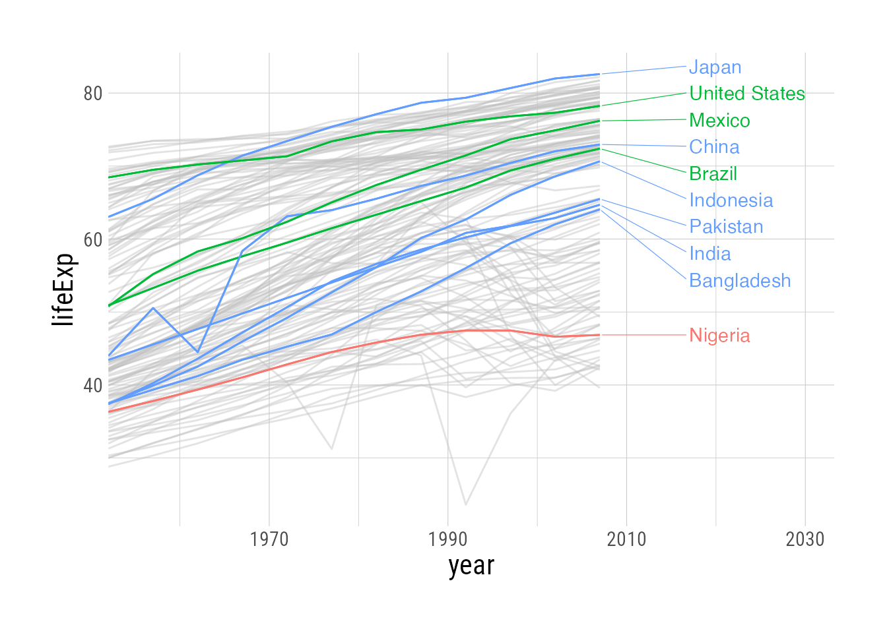
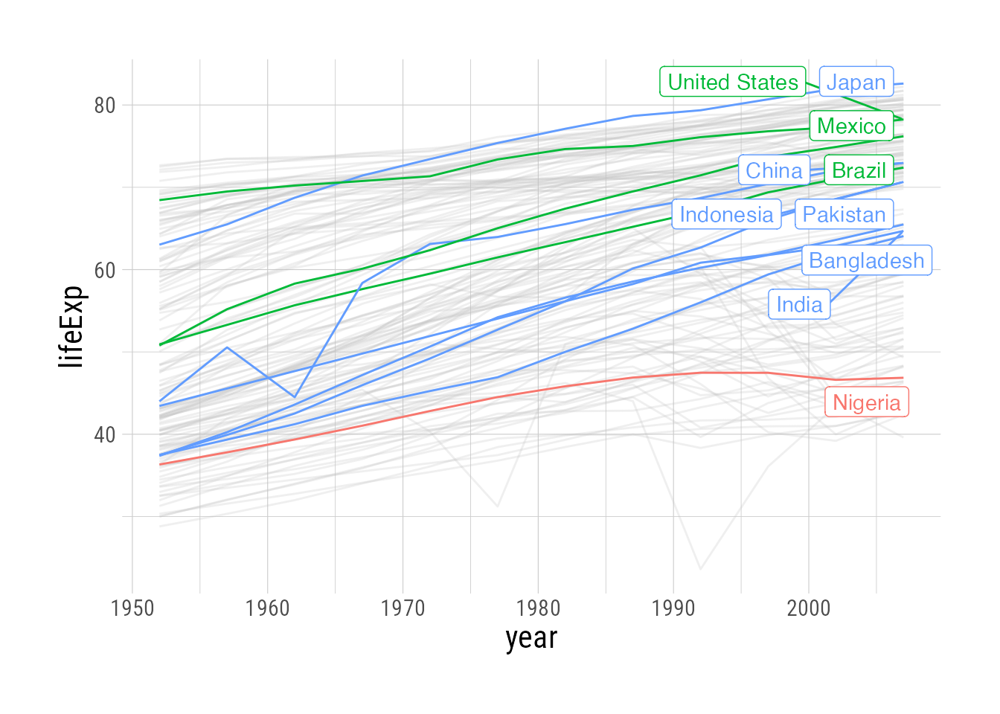
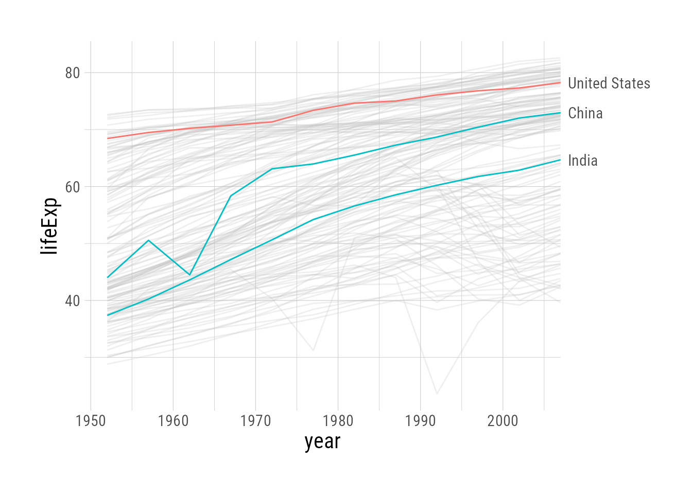
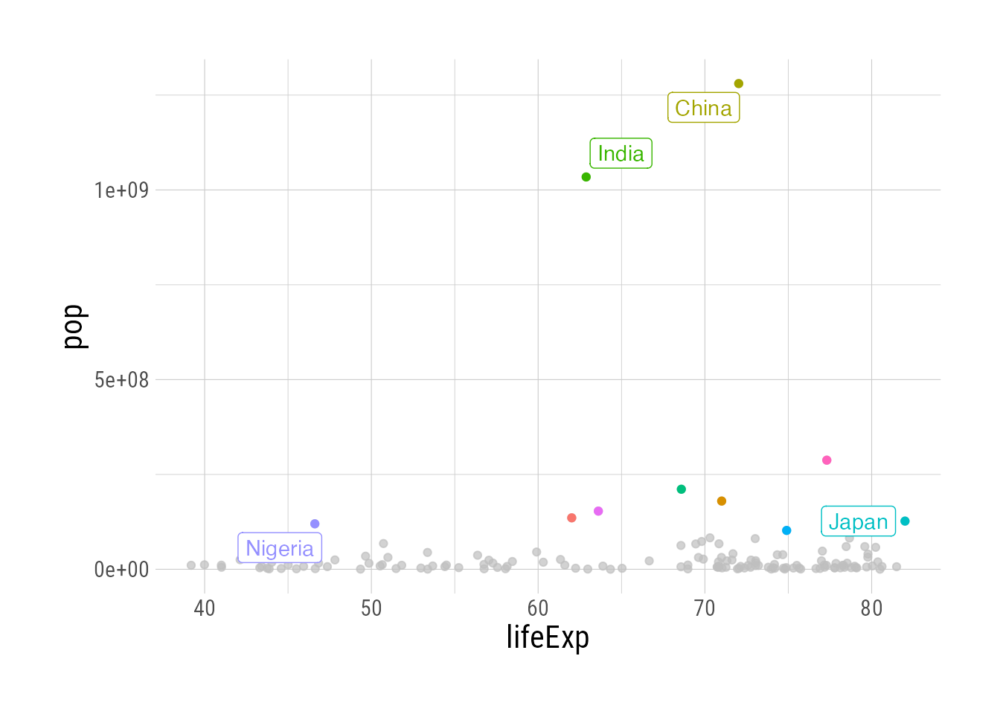

Spotlight subsets of data in your plots with gghighlight
The problem
We often want to make a subset of data stand out from the rest, but doing so manually is a bit tedious. You could, for example, add a logical column to the data highlight, and set a plot aesthetic to make 1s in a bright color and 0s in grey.
But gghighlight automates this process for ggplot2 plots. Let’s look at the life expectancy dataset from gapminder. Even when color-coding by continent, it’s very difficult to pick out individual countries. We can use gghighlight, though, to emphasize countries with the top 10 highest populations:
Code
library(gghighlight)
base_plot <- gapminder::gapminder |>
ggplot(aes(x = year, y = lifeExp, color = continent)) +
geom_line(aes(group = country))
pretty_plot <- base_plot +
scale_x_continuous(expand = expansion(mult = c(0,0.25))) +
geom_line(aes(group = country)) +
gghighlight(max(pop), max_highlight = 10,
unhighlighted_params = list(alpha = 0.25,
color = NULL
),
line_label_type = "ggrepel_text",
label_params = list(
hjust = 0,
direction = "y",
nudge_x = 10,
segment.size = 0.2
))
base_plot
pretty_plot
ggplot: Too busy to glean any insights
gghighlighted
gghighlight basics
Let’s start with the busy plot from above, which we’ve saved as base_plot. The gghighlight() function can be added to any ggplot, and requires only a predicate to select the highlighted portion of the data (passed directly to dplyr::filter(), so anything you can do there is fair game). Here we highlight countries with a population greater than 50 million.1
base_plot +
gghighlight(pop > 50000000)Since there are so many un-highlighted lines, it’s quite hard to see what’s happening. We can change the aesthetics of the un-highlighted lines with unhighlighted_params.
base_plot +
gghighlight(pop > 50000000,
unhighlighted_params = list(alpha = 0.25))More complicated filtering criteria
Since the first argument(s) of gghighlight get passed directly to filter, you can include multiple filtering criteria, like population over 50 million and only countries in Asia:
base_plot +
gghighlight(pop > 50000000, continent == "Asia",
unhighlighted_params = list(alpha = 0.25))(Note that in this plot, where we have relatively few highlighted lines, gghighlight adds labels for us.)
We can also provide a non-logical predicate to filter by, for example the top ten countries by population. The predicate is used to order the results, and the max_highlight argument determines the top n rows/groups based on that criterion:
base_plot +
gghighlight(max(pop), max_highlight = 10,
unhighlighted_params = list(alpha = 0.25))
Labels
The labels in the previous plot make things pretty crowded. gghighlight uses the ggrepel::geom_label_repel geom by default, and arguments can be passed to that function with the label_params argument.2 Here we’ll modify max.overlaps, which removes some labels when there are too many overlapping objects:
base_plot +
gghighlight(max(pop), max_highlight = 10,
unhighlighted_params = list(alpha = 0.25),
label_params = list(
max.overlaps = 5
))What if we want to have all of the labels off on one side, rather than on top of the plotted data? We can once again avail ourselves of label_params. I also prefer the labels to be text only—no border—which is accomplished with line_label_type = "ggrepel_text".
base_plot +
gghighlight(max(pop), max_highlight = 10,
unhighlighted_params = list(alpha = 0.25),
line_label_type = "ggrepel_text",
label_params = list(
hjust = 0, # align label text
direction = "y", # allow shifting labels on y axis to make room
nudge_x = 10, # push everything further to the right
segment.size = 0.2 # make pointing lines thinner
)
)One final tweak is to expand the plot rightward, so there is more room for labels. This is done by modifying the scale of the plot, as below. (I have not found a good way to make the labels appear in the margin)
base_plot +
# Modify scale:
scale_x_continuous(expand = expansion(mult = c(0,0.25))) +
gghighlight(max(pop), max_highlight = 10,
unhighlighted_params = list(alpha = 0.25),
line_label_type = "ggrepel_text",
label_params = list(
hjust = 0, # align label text
direction = "y", # allow shifting labels on y axis to make room
nudge_x = 10, # push everything further to the right
segment.size = 0.2 # make pointing lines thinner
)
)You’ll notice that in the plot above, the labels are drawn inside the plotting area, and not in the margin. I have not found a good way to make the labels in the margin only. The closest built-in option to gghighlight is to set line_label_type = "sec_axis" instead of "ggrepel_text", but this does not prevent the labels from overlapping each other (since it’s not using ggrepel anymore). This is ok in a plot with only a few—or very spaced out—labels, but doesn’t work well for our current plot. You can see in the second plot below that it looks pretty good when we select, say, only the top 3 countries by population.
base_plot +
gghighlight(max(pop), max_highlight = 10,
unhighlighted_params = list(alpha = 0.25),
line_label_type = "sec_axis"
)
base_plot +
gghighlight(max(pop), max_highlight = 3, # ***
unhighlighted_params = list(alpha = 0.25),
line_label_type = "sec_axis"
)
Other geoms
gghighlight works on geoms other than line, and in fact looks pretty snazzy in barplots/histograms plotted by group, where there is a lot of overlap. In the highlighted plot we facet by continent, but also show the overall distribution in gray.
gapminder::gapminder |>
ggplot(aes(x = lifeExp, fill = continent)) +
geom_histogram() +
facet_wrap(~continent) +
gghighlight()
gapminder::gapminder |>
ggplot(aes(x = lifeExp, fill = continent)) +
geom_histogram()And with geom_point, for example, we can call out the top ten countries by population in the data from 2002:
gapminder::gapminder |>
filter(year == 2002) |>
ggplot(aes(x = lifeExp, y = pop, color = country)) +
geom_point(group = 1) +
gghighlight(max(pop), max_highlight = 10,
label_key = country,
label_params = list(
max.overlaps = 1
))Warning: ggrepel: 6 unlabeled data points (too many overlaps). Consider
increasing max.overlaps
Note above that we’re warned that there were “too many overlaps,” and therefore some labels are omitted. In fact, if there are too many overlapping data points, all labels will be omitted You can remedy this by either having fewer highlighted points and/or changing max.overlaps.
gapminder::gapminder |>
filter(year == 2002) |>
ggplot(aes(x = lifeExp, y = pop, color = country)) +
geom_point(group = 1) +
gghighlight(max(pop), max_highlight = 5,
label_key = country,
label_params = list(
max.overlaps = 50
))